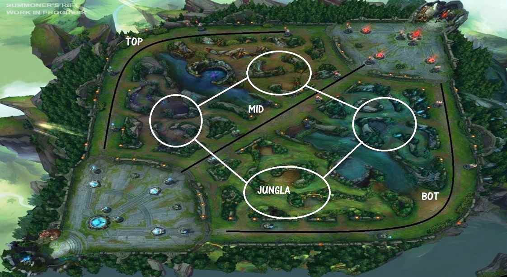
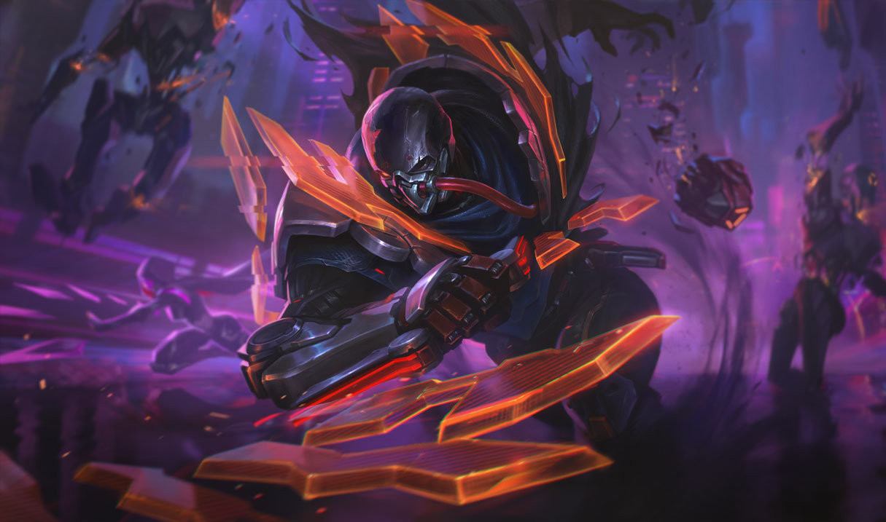

Una vez en una revisión de cuadernos en 2019 estaba bajando las gradas con mis cuadernos para revisar en segundo b en ese momento me cai de las gradas pero no de forma graciosa con mis cuadernos
También en 2019 cuando habian ensayos porm el aniversario del colegio,llevé mi bicicleta a un ensayo y con mis amigos nos retamos a bajar una bajada de cerro
al momento en el que me tocó pedaleé con mucah fuerza y me caí de cara :)
En que forma la pandemia alteró la vida de Frank
En el sentido del estudio cambió drásticamente ya que estaba acostumbrado a las clases presenciales y al inicio me chocó un poco ya uqe no entendia mucho pero ya pasado mucho tiempo ya me acostumbré y ya no se me hizo dificil
En el sentido de amistades masomenos ya que habia pandemia por lo que ya no los podia ver sin embargo ahora en ese tema ya voy bien
En cuestion social aprendi a hablar mejor y no quedarme callado eso fue algo bueno ya que antes no hablaba nada
En cuestion familiar mejoró mucho la relacion familiar ya que como estabamos en la misma casa aprendimos a hablar entre nosotros más de lo que ya hacíamos antes llegando incluso a leer en las noches en familia
En cuestión de eventos familiares no cambió mucho ya que en los cumpleaños de la familia hacemos llamdas osea no cambio mucho eso solo nos unió más
Cursos favoritos y en los que me va mal
Química I y II ya que es complicado ya que hay muchas formulas y es saber mucha teoria pero no es imposible
Algebra es medio complicado pero el examen es lo difícil
Geometría para mí es difícil ya que requieere analizar una figura y tambien requiere saber bien la teoría pero lo que se me hace difícil es lo de analizar la figura
Física I y II para mí es difícil ya que se requiere saber bien la teoría y conocer varias fórmulas también analizar un gráfico lo que a mí se me haxce difícil
Algo de lo que me gusta hacer
League of Legends
De manera breve explicare de que trata el juego
para empezar hay 5 posiciones que se pueden jugar como cada uno quiera pero cada uno tiene un rol específico

Comenzamos con top una linea bastante tranquila y podria decirse aburrida aqui van los tanques y algunsos tiradores
Seguiremos con la jungla el rol mas importante ya que de el dependen las decisiones en el equipo
A continuacion seguiremos con mid una linea con mas acción en la que van asesinos luchadores y magos
Por ultimo la bot aqui van dos personas el soporte y el adc el soporte es el ayudante del equipo y el adc sería el daño del equipo

Agradecimientos
Agradezco al colegio por haberme enseñado tantos valores y disciplinas que sé que en algun momento necesitare ,agradezco la exigencia con la que nos formaron y que gracias a eso seré una gran persona